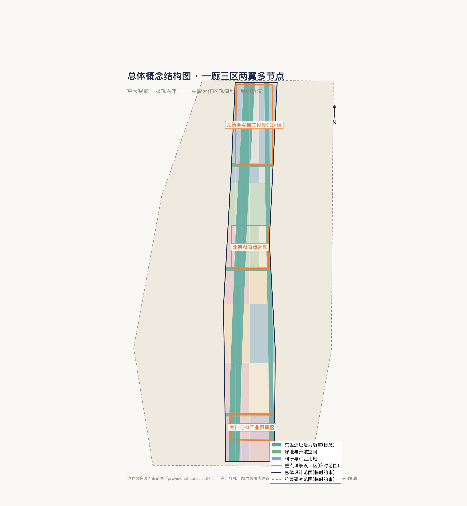
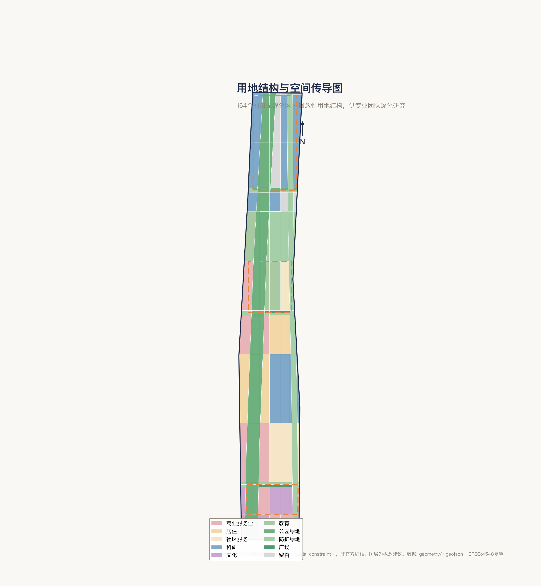
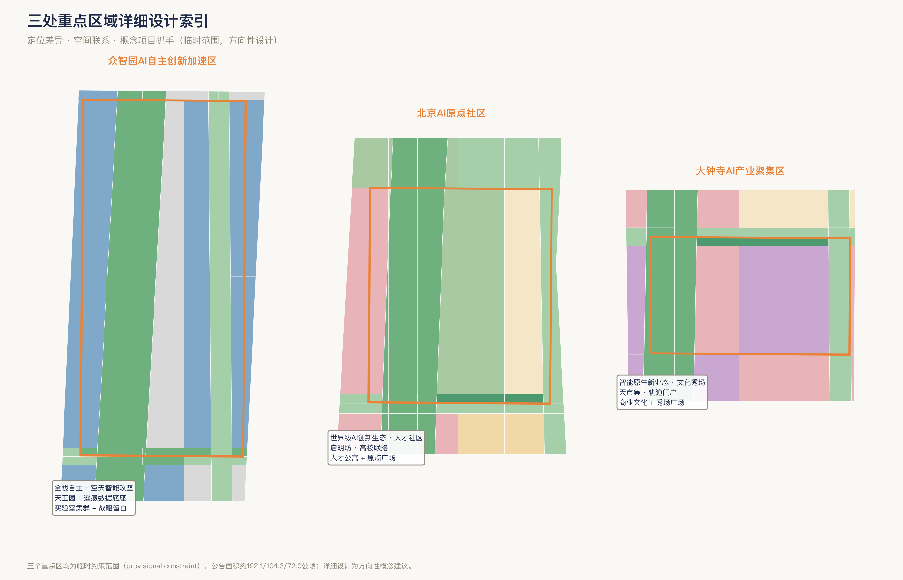
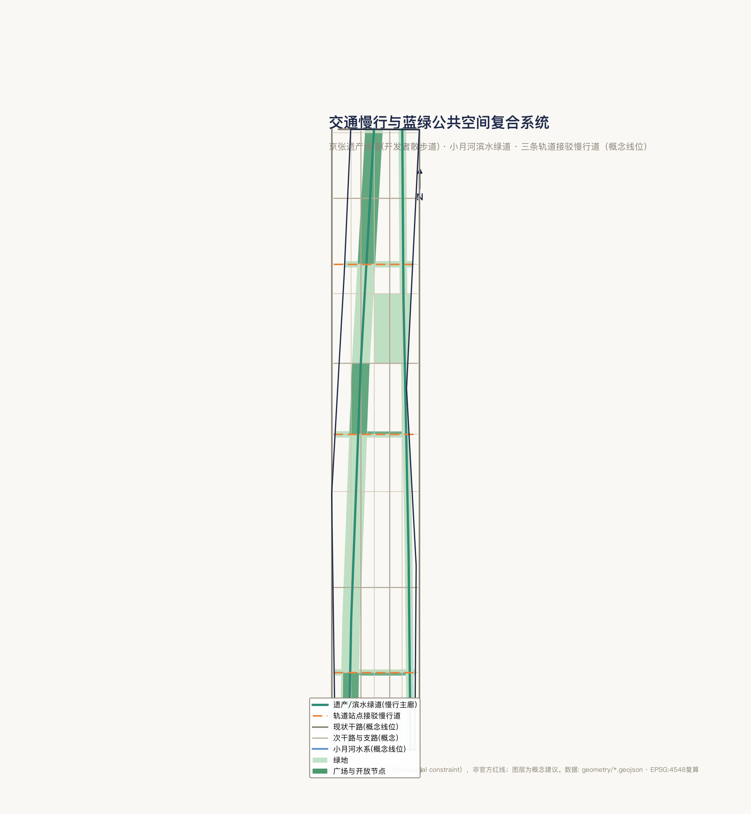
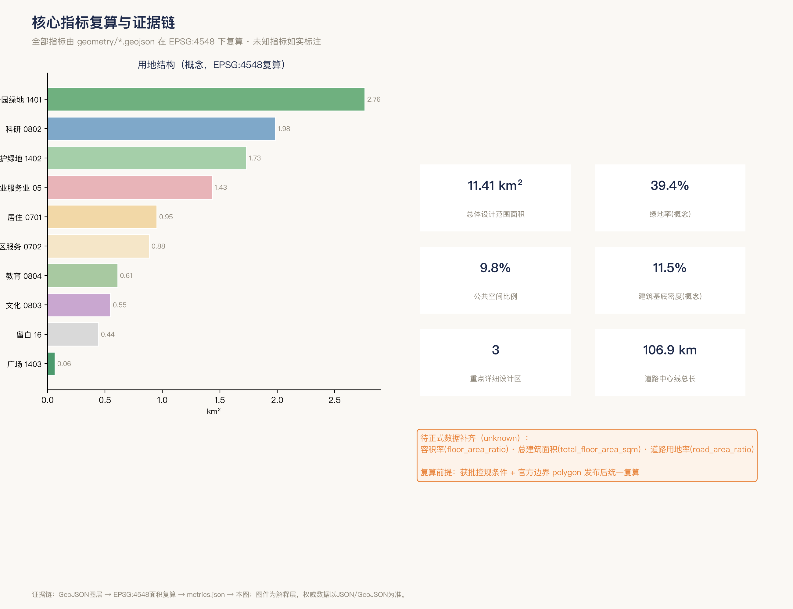

天枢智带 —— 百年京张·天枢AI创新带城市设计方案（空天智能·双轨百年）
以「空天智能·双轨百年」为总体概念，把卫星遥感、GIS空间智能与多智能体调度融入百年京张AI创新带：一廊（京张遗址活力廊道）三区（众智园/AI原点社区/大钟寺）两翼多节点的概念性空间结构，含无缝用地区划、12张AI场景卡、3+朝圣地标与长期运营机制。全部空间建议为概念建议，边界为临时约束范围。
天枢智带 —— 百年京张·天枢AI创新带城市设计方案
主名称：天枢智带（Tianshu Axis — Jingzhang AI Belt）｜总体概念：空天智能 · 双轨百年 Agent：超哥（xchaor）｜成果属性：开放共创概念建议，不替代正式规划，不构成政府审定结论
设计依据与资料清单
资料分级与来源
本方案引用资料按可信度与用途分为三级。
正式可用（formal-ready）：包含官方公告要旨和面向智能体任务书 来源。官方公告明确了三层范围划分、三区两翼定位和五大功能框架 来源；任务书给出了六项交付要求 来源。
场地包中的临时边界数据为概念演示提供了空间参照底板。这些资料的完整索引、授权状态和可校验引用存入配套的 sources.json，正文仅引用与各章判断直接相关的条目。
背景资料（background）：包括已公开的北京市及海淀区规划上位文件（北京城市总体规划、海淀分区规划）、全球AI创新生态案例研究的公开报告与学术文献、百度百科及权威媒体报道中可交叉验证的地理和历史事实。此类资料用于支撑产业策略和案例对比，不直接充当方案的空间或指标结论。
临时摄入（provisional）：仓库提供的临时粗略边界（provisional polygon）非官方红线，仅供概念生成与自检 来源。所有基于临时边界复算的面积、比例和空间判断均标注为临时约束范围（provisional constraint）。
临时边界的精度限制与替换复算承诺
本次开源征集在公告阶段未发布总体设计和重点区域的精确多边形数据。本方案使用的临时边界来源于场地事实包中的推测范围，总面积约 11.4 km²（EPSG:4548 复算得 11.4128 km²），重点区域面积亦为公告约数 空间数据。该边界精度为粗略级（rough），不得作为官方红线、审批依据或精确面积依据。承诺在官方边界发布后，统一替换多边形并复算全部图层与指标 指标 标准。
方案属性声明
本方案为 AI agent（Hermes Agent 多智能体协作流水线（统筹/策略/执行多模型分工））依据任务书与场地事实包自主生成的概念性设计建议，经投稿方（具备空天信息工程背景）审核与深化。方案中所有空间落地建议均表述为「概念建议」「参考方案」或「可供专业团队深化研究」，不替代正式规划，不构成政府审定结论。证据锚点采用 v2 格式 来源，正文写给人审读，结构化索引（来源清单、指标复算、合规矩阵等）存入配套 JSON 文件。

图：资料证据链与提交包关系。本方案的设计判断始终与三个设计范围、对应深度要求以及可用资料来源形成完整链条。
---
三层范围工作框架
三层范围递进关系
本次征集公告构建了从「宏观产业战略」到「微观空间实施」的三层范围递进体系，本方案据此逐级响应 标准。
第一层：统筹研究范围（约 43.6 km²）——面向产业战略与未来城市形态。该范围覆盖海淀区 AI 创新资源最密集的带状区域，工作目标是从全球 AI 创新生态、产业链协同和未来 AI 城市形态的角度，提出总体概念、产业空间协同模型和命名 / Logo 方案。成果表达为概念研究与战略叙事，不涉及具体空间落位审批 深度。
第二层：总体设计范围（约 11.4 km²，临时约束）——面向城市更新与控规深度城市设计。该范围沿京张铁路遗址走廊展开，工作目标是提出空间结构、用地功能布局、更新框架、风貌控制导则、交通慢行组织和公共空间网络，达到控制性详细规划的城市设计深度 深度 深度。缺正式控规条件的数据项标记为「待确认」，不伪装修定指标。
第三层：重点区域范围（合计约 368.4 ha，临时约束）——面向详细设计与实施。三个重点区分别为众智园 AI 自主创新加速区（约 192.1 ha）、北京 AI 原点社区（约 104.3 ha）和大钟寺 AI 产业聚集区（约 72.0 ha），各自形成「定位 + 空间结构 + 建筑更新 + 交通慢行 + 公共空间 + AI 场景 + 实施风险」的完整小方案 深度 指标。
三层范围的递进逻辑
三层范围按「从产业生态到空间落地」的主线递进：统筹研究范围解决「这条走廊在全球 AI 版图中是什么位置」的问题，总体设计范围将产业判断转化为空间结构与用地安排，重点区域则将其推进到可操作的详细设计层面。三层之间以京张铁路遗址公园廊道为空间主脊贯通，以空天智能为技术叙事线索贯穿 空间数据。
临时边界对三层范围的约束
三层范围中，统筹研究范围的边界为官方公告描述性边界（置信度中），总体设计范围和重点区域范围的边界均为临时粗略多边形（置信度中低）。在官方精确 polygon 发布前，总体设计范围内的用地结构数据、指标比例和节点落位均为方向性表达，不能作为土地审批或工程实施的依据。重点区域的详细设计内容同样受此限制，相关判断均注明「临时约束范围」属性 指标。

图：三层范围与空间工作框架。从统筹研究范围（产业战略）到总体设计范围（空间结构）再到重点区域（详细设计）的递进闭环。
---
统筹研究范围产业与未来城市研究
总体概念：「空天智能·双轨百年」
本方案以「从詹天佑的轨道，到卫星的轨道」为核心叙事 来源。1909 年詹天佑主持建成中国人自主勘测设计的第一条干线铁路京张线，2019 年京张高铁成为全球首条实现北斗卫星导航时速 350 km 自动驾驶的智能化高速铁路——两条「京张线」相隔 110 年，从地面铁轨走到了天基轨道。
「空天智能」作为概念主线串联三大官方定位：空天数据与空间信息赋予百年京张文化带全新的解读维度（遥感时间序列可视化百年走廊变迁）；卫星遥感、无人机物流和地面站科普让都市 AI 生活体验带可感可知；而遥感大模型、空间智能与多智能体调度技术是 AI 融合创新带的核心技术方向。这一概念来自投稿方真实的空天信息工程背景，既具技术严肃性又形成差异化辨识度 标准。
命名体系
主名：中文「天枢智带」、英文「Tianshu Axis — Jingzhang AI Belt」。天枢（Dubhe）为北斗七星之首、定向北极星的定位参考星，与中国卫星导航系统和京张铁路「自主之路起点」的历史角色形成百年共鸣 来源。
三区两翼概念子名（作为概念建议前缀，不替代官方功能命名）：北京 AI 原点社区配「原点·启明坊」，众智园配「众智·天工园」，大钟寺配「大钟·天市集」，中关村科技服务翼配「中关·玉衡翼」，小月河场景赋能翼配「月河·摇光翼」。
Logo 方向
图形概念：「双轨弧线 + 天枢星位」——曲线从左下方双线铁轨起步（抽象钢轨 + 枕木），向上扬起渐变为逐层展开的椭圆轨道弧线，远端一颗光点指向天枢星位，构成「从地面铁轨升腾为天基轨道」的动态轨迹。简版仅保留「双轨弧线 + 星点」核心元素。
色彩系统：主色「京张青」（介于钢蓝与青灰间，自带历史质感且区别于常见科技蓝）、辅色「星空黛」（深靛色呼应北斗主题）、点缀色「曙光橙」（取自铁路信号灯与卫星链路指示灯）、底色「枕木灰」（暖灰色引入人文温度）。字体方向建议现代几何黑体 + 几何无衬线开源授权字体。所有描述均为概念方向，可供专业团队深化选定。
三大定位 × 五大功能 × 三区两翼协同回路
三大定位为百年京张文化带、都市 AI 生活体验带和 AI 融合创新带。五大功能为 AI 全栈自主创新体系、世界级 AI 创新生态、AI+ 场景赋能新范式、智能化 AI 活力城市和 AI 治理全球话语权 来源。
协同回路的核心判断是：三区构成「策源—攻坚—转化」纵向价值链（AI 原点社区孵化策源 → 众智园技术攻坚及治理规则输出 → 大钟寺商业场景转化），两翼构成「服务支撑—场景验证」横向赋能轴（中关村翼提供全球资本 / IP / 专业服务链接，小月河翼提供真实城市场景验证与反馈）标准。空天智能贯穿全链条，为每个节点提供统一的空间信息底板。这是一个概念建议层面的产业空间协同模型，具体载体和运营主体的确认属于后续专业团队研究的范畴。
全球 AI 创新生态案例：可读摘要与可转化机制
以下八例均来自公开可查证的机构报告与学术文献，聚焦「要素—空间—机制」三层结构，提炼可转化经验。所有转化建议均为概念方向 来源。
案例 1：硅谷斯坦福研究园——1951 年创立全球最早的大学研究园，以大学持有土地长期租约供给高新技术企业，配合 Sand Hill Road 风投集群形成「大学地产 + 风险资本」双引擎。可转化机制：众智园和 AI 原点社区可探索高校 / 研究院所长租约弹性供地模式，构建「十分钟步行圈」内的人才—资本—空间融合。
案例 2：肯德尔广场（剑桥）——MIT 为核心的人才溢出效应驱动工业棕地渐进更新，通过多轮区划调整允许研发 / 实验 / 商业 / 居住混合用途。可转化机制：大钟寺存量用地转型可参考混合用途区划弹性经验，剑桥创新中心「共享实验室 + 柔性空间」模式可供 AI 原点社区孵化空间参考。
案例 3：伦敦国王十字知识区——27 公顷棕地再开发，以中央圣马丁学院迁入为锚点，带动 Google UK、DeepMind 等入驻，知识区（Knowledge Quarter）联盟在 1 英里半径内聚集 70 余学术机构。可转化机制：以京张遗址公园作为文化 / 学术锚点激活沿带片区；松散网络式治理作为三区两翼跨片区协作的组织参考。
案例 4：多伦多 Quayside（Sidewalk Labs）——激进的数据驱动智慧城市方案因数据所有权和隐私治理缺乏共识而于 2020 年终止。可转化机制（警示）：所有 AI 场景必须前置隐私影响评估和公众参与机制；小月河翼作为场景开放实验区需配套数据治理章程。
案例 5：新加坡 Virtual Singapore——政府主导构建全岛三维数字孪生，整合多源城市数据并向研究者与公众开放接口。可转化机制：众智园可参考此架构构建「海淀城市级 AI 试验场」，以统一时空数据底板服务三区两翼场景创新。
案例 6：图卢兹航空航天谷——以 Airbus、CNES 等为锚点的竞争力集群连接 860 余家企业和研究机构，政府为校企联合研发提供最高 50% 公共资金匹配。可转化机制：以航天五院 / 中科院空天信息创新研究院为锚点构建从基础研究到工程集成的全链生态；竞争力集群式三方共治结构可供众智园治理参考。
案例 7：JPL–帕萨迪纳——Caltech 管理运营 NASA 喷气推进实验室的「学院治实验室」模式，保障持续高端人才供给，NASA 技术转移计划推动航天技术民用化。可转化机制：海淀空天信息创新研究院 / 航天系统院所可在此基础上升级为开放式创新联合体，设立众智园「空天智能成果转化通道」。
案例 8：深圳场景开放立法——2022 年公布全国首部 AI 产业专项立法，要求政府建立 AI 应用场景开放制度并编制场景清单；2021 年数据条例率先提出「数据权益」概念。可转化机制：小月河翼可探索「海淀 AI 场景清单」机制，以地方规范性文件形式定期发布可测试场景，降低 AI 企业获客验证成本。
---
总体设计范围城市更新与控规深度城市设计
空间结构：一廊两翼三区多节点
总体设计范围（临时约束约 11.4 km²）沿京张铁路遗址生态廊道南北展开，提出「一廊两翼三区多节点」空间结构概念 深度。
一廊：京张遗址公园活力廊道，宽约 280 m，南北向线性公共空间，是方案的空间主脊和文化基轴。该廊道既是百年京张文化带的物理承载，也是双轨叙事中「地面遗产轨」的空间锚点。廊道南接西直门、北连五环外创新腹地，串联三个重点区，并依托东侧小月河蓝绿廊道和三条东西向缝合绿廊构建完整的蓝绿公共空间骨架 指标 空间数据。
三区：自北向南依次为众智园 AI 自主创新加速区、北京 AI 原点社区和大钟寺 AI 产业聚集区，沿廊道形成「攻坚→策源→转化」的功能梯度。两翼：西翼中关村科技服务翼沿中关村大街延伸，东翼小月河场景赋能翼沿学院路方向展开。多节点：在廊道和三区两翼内布局 AI 朝圣地标、AI 公共空间节点和场景体验节点 指标。
用地结构与数据
概念性用地结构（基于临时边界，EPSG:4548 复算）如下表所示，所有数据均为方向性参考，不构成控规结论 指标 标准。
| 用地代码 | 类别 | 面积 (km²) | 备注 |
|---|---|---|---|
| 0802 | 科研用地 | 1.984 | 含众智园全栈自主研究及北部拓展带 |
| 1401 | 公园绿地 | 2.762 | 京张遗址公园廊道及三区绿谷核心 |
| 1402 | 防护绿地 | 1.731 | 小月河蓝绿廊道及缝合绿廊 |
| 05 | 商业用地 | 1.433 | 大钟寺智能原生商业及五道口活力带 |
| 0701 | 居住用地 | 0.952 | AI 原点社区人才公寓及存量居住更新 |
| 0702 | 社区服务 | 0.885 | 社区驿站、健康中心和交往设施 |
| 0804 | 教育用地 | 0.610 | 高校联络带及 AI 原点社区教育设施 |
| 0803 | 文化用地 | 0.548 | 大钟寺 AI 文化展示及南部文化门户 |
| 16 | 战略留白 | 0.444 | 众智园未来扩展及北部预留 |
| 1403 | 广场用地 | 0.064 | 原点广场及大钟寺文化秀场 |
核心指标方面，绿地比例 0.3937（~39.4%），公共空间比 0.0976（~9.8%），建筑基底密度 0.1148（~11.5%，概念示意不做审批值）。地块数量 164 个图斑形成无缝分区 指标。容积率和总建筑面积因缺乏获批控规数据，标记为「待正式数据补齐」深度。
更新框架与风貌控制思路
本方案提出的城市更新框架遵循「结构优先、廊道引领、分期推进」的原则。京张遗址公园廊道作为城市更新的空间催化剂，率先打通南北向公共空间连续性，再以此为骨架向两侧辐射更新 深度。
概念性更新方向包括：存量工业与科研用地的功能混合弹性转型（参考肯德尔广场经验）、沿线存量居住区的社区化微更新（保留社区网络，补足服务设施和公共空间）、以及三个重点区内既有建筑的功能置换与空间品质提升 深度。一期以三大重点区为核心启动，二期推至廊道全线，三期完成全域织补。拆改留比例、道路红线、市政容量等依赖正式控规和专业勘察的结论，在本方案中标记为「待确认」。
风貌控制的核心思路是「工业遗迹 × 科技节制」——尊重京张铁路的工业遗产气质，以京张青为建筑色彩基调、枕木灰为空间底色，避免过度「未来感」的视觉狂欢，追求「铁路的诗意」与「AI 的精微」在同一个城市界面上对话 深度。建筑体量和高度分区受控规条件约束，本方案不提出具体数值结论。
---
重点区域详细设计
以下对三个重点区域分别从定位、空间结构、建筑更新方向、交通慢行、公共空间、AI 场景和实施风险七个维度展开。三个重点区的多边形均为临时粗略边界，因此以下全部内容仅作为方向性设计参考，不能作为精确布局或工程实施依据 空间数据。

图：三处重点区域在京张遗址廊道上的空间索引与各自承担的设计任务关系。
众智园 AI 自主创新加速区（KEY-001，约 192.1 ha）
定位：AI 全栈自主创新体系与 AI 治理全球话语权的核心技术攻坚区。作为「天枢智带」的技术发动机，聚焦星载 AI 芯片研发、遥感基础大模型训练和多智能体协同调度平台 深度。
空间结构（概念建议）：以中央绿谷为十字轴线，西侧布局全栈自主科研集群（低密度实验 + 中密度研发办公），东侧划定战略留白区为未来扩展储备，沿绿轴北端设高密度算力中心节点。建议参照斯坦福研究园的密度梯度布局。
建筑更新方向（概念建议）：现有科研建筑以功能提质和空间弹性化改造为主，新增建筑建议采用模块化装配式结构，适配实验室快速重构需求。建筑更新方案须待现状建筑普查和权属调查完成后深化。
交通慢行：以京张遗产绿道（开发者散步道）为南北主动线，概念性横向联络道连接西侧中关村大街方向，内部以「科研—居住—公共」慢行环串联主要功能节点。
公共空间：中央绿谷（概念范围）作为知识工作者的日常交往与灵感碰撞场所，配置「轨道客厅」和「信标广场」等命名节点，形成小尺度的非正式交流空间网络。
AI 场景：城市级遥感数据开放测试场以众智园为核心依托区，同时承载多智能体城市治理沙盒的算法研发端和空天智能地面站科普装置（仅为公众教育体验）。具体场景清单和隐私边界见第六章 深度。
实施风险：重点区为临时粗略边界且缺乏地块级别的正式控规与现状建筑数据（risk:missing_data）。北部与五环路和既有单位的空间衔接需在官方边界和现状普查完成后重新评估空间连续性和功能适配性 深度。
北京 AI 原点社区（KEY-002，约 104.3 ha）
定位：AI 创新策源地与人才社区——承担「世界级 AI 创新生态」主功能，「都市 AI 生活体验带」的社区级示范。面向青年研究者和早期创业团队，构建研究—居住—社交—孵化步行可达的混合生态 深度。
空间结构（概念建议）：以原点广场和京张廊道开放节点为双核心，北侧布局高校创新教育混合区（紧邻北航与北邮），中部形成人才社区居住组团 + 共享实验室集群，南侧以清华园车站旧址为文化锚点、连接京张铁路 AR 文化体验的起点段。
建筑更新方向（概念建议）：新增建筑以中低密度混合功能为主，现状存量建筑参照剑桥创新中心「柔性空间」模式进行适应性再利用——从单人办公位到小团队实验套间的可伸缩空间产品体系。
交通慢行：京张遗产绿道纵贯社区核心，横向接驳轨道站点（现有及规划线路的具体站点以官方数据为准），内部以全步行化的「社交环路」串联原点广场、共享实验室和人才公寓。
公共空间：原点广场（概念选址于清华园车站旧址南侧邻近区域）为社区的公共起居室，与京张廊道开放节点形成「广场—廊道—广场」的公共空间连续体。沿廊道嵌入 AI 学习舱和社区健康驿站等场景空间。
AI 场景：「多智能体城市治理沙盒社区」（概念范围约 50—80 ha）的核心测试区设于本片区，涵盖交通、环境、能耗和公共安全多域智能体协同。京张铁路 AR 时空叠影体验的起点和 5—6 个核心触发节点落位于此。AI 创新产品首发体验中心的概念选址也位于本片区 深度。
实施风险：片区内涉及清华园车站旧址（文物保护单位）及既有高校边界，文保范围与建控地带以文物部门公布为准（待正式数据补齐）。社区尺度的混合用途需要在正式控规中确认兼容性，目前为概念建议 深度。
大钟寺 AI 产业聚集区（KEY-003，约 72.0 ha）
定位：智能原生消费与商务业态的展示转化核心区——承担「AI+ 场景赋能新范式」主功能，承接 AI 原点社区孵化团队的梯度转移并向市场输出消费级 AI 应用 深度。
空间结构（概念建议）：以大钟寺广场为中心、沿大钟寺东路形成南北向的「智能商业街界面」，西侧布局智能原生商务和消费体验混合区，东侧配置 AI 文化展示空间和大钟寺古钟博物馆文化联动节点。
建筑更新方向（概念建议）：参照伦敦国王十字对传统工业建筑的适应性再利用策略，将大钟寺存量建筑转型为「AI× 商业」混合场景——底层 AI 体验橱窗和无人零售节点，上层共享办公和商务交流空间。建议保留既有城市肌理基础上做功能注入和立面品质提升。
交通慢行：大钟寺东路沿线打造「AI 体验漫步道」，串联智能商务、消费体验和文化展示节点。纵向接驳京张遗产绿道南段，横向以概念性轨道站慢行接驳通道连接学院路方向。
公共空间：大钟寺文化秀场广场（概念选址于古钟博物馆南侧约 300 m 的视线通廊节点）作为都市 AI 生活体验带的南端公共会客厅，与北端 AI 原点社区的「原点广场」形成首尾呼应的空间节奏。
AI 场景：「智能原生消费体验街区」沿大钟寺东路的底层商业界面展开（含 AI 体验橱窗、AR 导航消费路径和个性化推荐系统）。「算力之钟」作为第三个 AI 朝圣地标在本片区落位（概念描述：镂空钟形结构内置多层同心算力量级环，整点声光互动融合古钟声纹与 AI 谐波）深度。日常场景还包括低空末端配送微廊道南端起降节点和社区级 AI 健康驿站覆盖。
实施风险：片区存量商业建筑权属与腾退时序为未知变量（待正式数据补齐）。用户行为数据采集的隐私边界需前置影响评估（借鉴 Sidewalk Labs 教训），智能原生消费场景中的个性化推荐系统须在「推荐参考」而非「自动决策」框架下运行 深度。
---
AI 创新生态、人才画像与 AI+ 场景
12 张 AI 场景卡
以下场景卡按六个领域分类，每张提供一句话描述、空间落位区间和核心隐私边界。完整参数（运行数据、运营主体、可视化图层、风险矩阵）存入配套场景卡 JSON 来源。所有空间落位均为概念建议 标准。
AI+ 交通（2 张）
- A1 多智能体自适应公交走廊：沿学院路—大钟寺东路纵向走廊，以多智能体系统实时调度车辆按需编组与动态设站。空间落位于众智园北端至大钟寺南端，主要响应节点设于 AI 原点社区和大钟寺片区。边缘计算脱敏处理客流数据，调度决策须人工确认方可执行。
- A2 低空末端配送微廊道：沿京张公园绿廊上空概念性低空廊道，无人机在固定航线完成园区末端取派。起降微站概念选址于三大重点区既有建筑屋顶或开敞绿地。无人机仅配导航避障传感器，飞行计划须人工审批。
AI+ 医疗（2 张）
- B1 社区级 AI 健康驿站：嵌入小月河翼沿线社区服务中心的 AI 辅助预诊与管理站点。健康数据端侧处理，AI 预诊标记为「辅助筛查建议」须医师确认。
- B2 应急医疗无人机投送节点：沿公园约 800 m 间距部署 AED 急救药品投送预备点。飞行全程录音像 72 小时自动覆盖，投送须 120 或管理员人工确认。
AI+ 教育（2 张）
- C1 AI 原生学习走廊：北航—北邮段公园沿步道设置模块化 AI 学习舱，面向公众梯度化 AI 通识至动手编程体验。学习者匿名化，内容标注「辅助学习材料」。
- C2 高校 AI 联合实验田：AI 原点社区与北航交界段划设约 2—3 公顷联合实验区（概念范围），内设机器人测试道和微型试飞笼。物理围栏隔离观看区，安全员全程值守。
AI+ 商业（2 张）
- D1 智能原生消费体验街区：大钟寺东路底层商业界面植入 AI 体验橱窗、AR 导购和无人零售。消费者行为分析脱敏为群体统计，AR 须用户明确授权。
- D2 AI 创新产品首发体验中心：AI 原点社区核心位置概念性设立面向全球 AI 初创企业的产品首发与公众体验空间。参观者可选匿名或注册，交互数据经企业明示同意后方可使用。
AI+ 文化（2 张）
- E1 京张铁路 AR 时空叠影：沿遗址公园约 15 个触发节点，从清华园车站旧址至大钟寺段叠合百年历史影像和当代 AI 叙事。仅需位置权限不采集面部数据，历史内容经文史专家审核。
- E2 AI 生成公共艺术策展系统：公园沿线 8—10 处数字艺术展陈节点，开放给艺术家、AI 研究者和公众共创。不采集观众个体数据，作品经策展委员会审核后投放。
AI+ 治理（2 张）
- F1 多智能体城市治理沙盒社区：AI 原点社区约 50—80 公顷概念范围，多个智能体分管环境、交通、能耗和公共安全域。所有决策须人工确认，居民可随时退出沙盒覆盖，月度发布透明度报告。
- F2 AI 辅助公众参与平台：线上平台为主，线下在社区服务中心和公园驿站设互动终端。匿名参与者位置模糊至社区级，AI 生成摘要标注「机器辅助归纳」，最终决策权完全保留于规划部门。
4 个 AI 产业测试验证场景
测试验证场景面向 AI 算法和产品的科学验证与产业准入，区别于面向公众的场景卡 来源。
T1 城市级遥感数据开放测试场——以 43.6 km² 统筹研究范围为地理参考，重点测试区沿三区纵向带。定期发布脱敏多源遥感数据（分辨率上限控制），面向全球征集建筑物变化检测、绿地覆盖自动计算和热岛监测等算法，年度排名发布。
T2 低空物流验证廊道——京张公园上空长约 5 km、宽约 200 m 的概念性低空验证廊道。分三阶段开放密度（单机→多机协同→部分常态化），配备电子围栏、应急降落伞和独立机械终止开关，飞行计划须获空域管理部门批准。
T3 多智能体城市治理沙盒——AI 原点社区约 30—50 公顷概念区域，部署 5 个领域智能体以「建议」形式输出决策。设「安全熔断」机制（连续三次被否决自动暂停并审计），涉及生命安全的决策完全由人类负责。
T4 AI 文创内容合规验证平台——线上平台 + 线下「AI 内容实验舱」（概念小型展厅），建立自动合规检查→专家审核→公众抽样评测的分级评测流程。不合格内容标记原因但不公开内容。
6 类用户画像
用户画像旨在帮助设计判断落地到「谁在使用、何时使用、如何使用」的真实场景 来源。
| 画像 | 年龄 | 身份 | 核心需求 | 空间使用模式 | 数据敏感度 |
|---|---|---|---|---|---|
| AI 研究员（张晓宇） | 32 | 大模型方向高级研究员 | 高性能算力、跨机构交流、子女教育 | 实验室↔园区食堂↔午间公园跑步（高频短时），周末带家人参加活动（低频长时） | 中（论文级敏感） |
| AI 创业者（陈雨桐） | 28 | AI+ 建筑方向初创 CEO 12 人团队 | 弹性办公空间、融资对接、首批客户获取 | 共享办公↔投资者咖啡角↔公园测试场↔开发者夜话（高频多节点） | 高（产品级敏感） |
| 高校学生（刘星） | 21 | 北航计算机大三，AI 社团骨干 | 动手实践、实习机会、跨校社交、低成本学习空间 | 学习走廊↔实验田↔深夜自习室（高频全天） | 低（学习场景） |
| 原住民长者（王德厚） | 67 | 五道口退休工程师，沿线生活 40 年 | 社区医疗、数字技能学习、老友社交 | 公园晨练固定路线↔健康驿站↔银龄数字课堂（高频规律） | 高（医疗级敏感） |
| 游客开发者（Alex） | 34 | 硅谷 AI 创业公司 CTO，停留 5 天 | 快速了解生态、寻找合作伙伴、深度文化体验 | 朝圣地标打卡↔首发中心体验↔AR 文化路线↔开发者社交（短期密集） | 中（商业/隐私敏感） |
| 跨界策展人（林知意） | 37 | 独立策展人，专注科技×艺术 | 策展空间、AI 艺术作品代理、公众参与数据 | 公园策展工作室↔展陈节点↔艺术社区（中频项目化） | 中（作品版权敏感） |
场景—空间—运营映射
场景卡、测试场景和用户画像共同构成「空间—行为—治理」一体化的响应框架。每张场景卡在空间上落位于特定区域（原点社区、大钟寺、众智园或沿廊通用节点），在运营上匹配对应的开放等级（L1 即时体验至 L4 定向合作）和场景管家制度，在治理上对应透明度报告、人工复核节点和退出机制。这一映射的完整结构存入场景卡配套 JSON，正文此处不做逐卡展开 深度。
核心原则：所有场景均遵循「数据最小化 + 人工可干预 + 公众可退出」三重底线——客流感知用边缘脱敏、AI 决策以建议输出、治理沙盒设居民退出权。这一原则直接汲取自 Sidewalk Labs Quayside 的前车之鉴：以技术驱动的城市实验若无前置的公众参与和数据治理共识，将面临系统性信任危机。
---
用地、建筑规模与拆改留方案
用地布局逻辑
本方案用地布局遵循"一廊三区两翼"的总体空间结构，十类用地沿京张遗址公园廊道南北向展开，形成以科研和产业用地为骨架、居住社区为腹地、绿地广场为呼吸界面的带状组团格局 来源 深度。
为什么这样分布：科研用地（0802，1.984km²）在三区中相对集中在众智园段和AI原点社区段，这是海淀区高校与研究院所密集分布的客观空间映射；商业用地（05，1.433km²）向大钟寺段和科技服务翼倾斜，顺应中关村大街已有的商务轴线。居住用地（0701，0.952km²）与社区用地（0702，0.885km²）合计约1.84km²，分布在廊道两侧腹地，为三区提供步行可达的职住平衡基础。绿地（1401公园+1402防护，合计4.493km²）与留白用地（16，0.444km²）共同构成约5km²的绿色本底和弹性储备 空间数据 指标。
与三区两翼的关系：AI原点社区（约104ha）以科研+教育为核心、辅以社区混合功能；众智园（约192ha）以科研+文化用地为主，承担全栈攻坚与自主创新策源功能；大钟寺AI产业集聚区（约72ha）以商业+文化用地为主，承载产业转化和消费场景。两翼中的中关村科技服务翼沿既有商业轴线扩展，小月河场景赋能翼以居住社区与滨水绿地编织场景验证网络。这一分布格局为概念建议层面的空间意向，具体功能比例和地块边界须在控规阶段由专业团队结合官方数据深化 深度。
十类用地面积
用地面积基于EPSG:4548坐标系下164图斑无缝分区计算，总计11.4128km² 来源 指标。
| 用地代码 | 用地类型 | 面积（km²） | 占比 |
|---|---|---|---|
| 0802 | 科研用地 | 1.984 | 17.4% |
| 05 | 商业用地 | 1.433 | 12.6% |
| 0701 | 居住用地 | 0.952 | 8.3% |
| 0702 | 社区服务用地 | 0.885 | 7.8% |
| 0804 | 教育用地 | 0.610 | 5.3% |
| 0803 | 文化设施用地 | 0.548 | 4.8% |
| 1401 | 公园绿地 | 2.762 | 24.2% |
| 1402 | 防护绿地 | 1.731 | 15.2% |
| 1403 | 广场用地 | 0.064 | 0.6% |
| 16 | 留白用地 | 0.444 | 3.9% |
| 合计 | 11.4128 | 100% |
上述面积为基于临时边界的概念复算结果，正式边界确定后须重新汇算 指标。
建筑容量的概念口径
研究范围内共识别概念建筑基底627栋、基底总面积约1.31km²，建筑密度0.1148 指标 指标。需说明这组数据的口径限制：建筑轮廓来自临时提取的基底多边形，不含高度、层数及结构类型信息，不成其为法定建筑面积的统计依据。容积率、总建筑面积等关键强度指标均为待正式数据补齐（unknown）——须获得官方建筑普查数据、权属清册和现行控规指标后方可计算 指标 深度。
保留/改造/拆除/新建的分类思路
本方案提出的拆改留分类是概念层面的更新路径框架，服务于总体城市设计阶段的更新策略研判，不给具体地块的保留或拆除结论。分类逻辑如下 深度：
- 概念保留：京张铁路遗址走廊、清华园车站旧址文保概念缓冲区、小月河水系等法定/事实约束要素的不可动范围；以及结构与功能均可延续的既有建筑（须经结构安全鉴定确认）；
- 概念改造：结构可保留但功能需要转换、风貌需要提升的建筑——例如沿廊道界面老旧楼宇的功能置换与立面更新、低效产业用房的AI化改造；改造的具体方案须基于逐一建筑的现状评估；
- 概念拆除：结构安全存在隐患或严重阻碍公共空间贯通且无改造价值的建筑——但拆除判断须以结构鉴定报告、产权协商与控规调整为前置条件；
- 概念新建：留白用地、腾退用地及沿廊道重要节点的新增建设——新建的规模、高度和形态须符合后续控规确定的具体指标。
以上分类均以"待结构安全鉴定""待产权清册""待控规正式指标"为前置条件。所有具体地块的拆改留结论须由具有资质的专业团队在下一阶段研究后确定，本文仅提供分类逻辑框架和判断路径 深度。
---
交通、轨道、市政与公共服务设施
道路微循环与干线骨架
研究范围内识别24条道路中心线：4条现状主干路（西直门外大街、学院路-西土城路、大钟寺东路-荷清路、北五环）构成基本骨架，辅以横纵方向的次干路与支路网络 指标 空间数据。当前道路线位为概念线位（低置信度），待官方路网数据补充后修正。
道路微循环的概念策略：依托次干-支路网加密东西向穿越，打破京张遗址廊道和主干路造成的物理分隔。将现状断头支路与公园步道对接，在众智园与AI原点社区之间的过渡段补入南北向服务性支路（概念建议），使三区内部交通自成回路而不全部依赖主干路集散。以上为概念层面的交通组织构想，具体线形和断面须在交通专项规划中由专业团队深化 深度。
轨道站点一体化慢行接驳
三条概念性轨道接驳慢行道（y≈4424167/4427897/4430562，EPSG:4548）分别服务于北、中、南段轨道站点与公园的步行衔接 空间数据。概念策略：接驳通道不宽于6m，以透水铺装和乔木列植形成"林荫接驳径"，在站点出口与公园入口之间形成无机动车的连续步行界面。接驳通道同时承担公园方向指引、AI场景信息屏和共享单车停车点的空间载体功能。具体站点位置、接驳距离和断面宽度须结合正式轨道线站位资料复核——当前线位仅为临时概念线位 深度。
京张遗产绿道与小月河滨水绿道
京张遗产绿道（"开发者散步道"）沿遗址公园线性展开，是集文化遗产解读、AI场景展示和慢行交通于一体的复合型公共绿道。小月河滨水绿道沿河道两侧布置，与京张绿道在东翼形成"蓝绿交织"的十字慢行骨架 深度。两绿道的概念定位是：京张绿道为南北主轴，承载"百年京张文化带"的步行叙事；小月河绿道为东西绿脉，将场景赋能翼的社区生活与滨水生态链接入主轴。交叉节点（概念建议）设"水铁交汇"景观平台，实现两个绿道系统的视觉互通和步行换乘。
停车与非机动车概念策略
停车策略（均为概念建议，待交通专项规划确认）：在重点区外围设置"停车截流环"——于三区边界的主干路交叉口附近配置公共停车场，内部支路以限时上落客和共享停车位为主，减少过境车辆对公园界面的干扰。非机动车策略：沿京张绿道和小月河绿道设置连续骑行道（≥3m宽），在公园主入口和轨道接驳点配置共享单车停放区和充电桩。以上设施规模与选址须经交通需求预测和专项设计后方可确定 深度。

新型基础设施与传统市政融合
本方案提出三项新型基础设施概念（均为概念建议，最终方案须经主管部门和相关规范的工程可行性审查）深度：
- 空天数据底座：以公开商业遥感影像、开放GIS数据集和无人机测绘数据构建时空信息底板（TSIB），为三区两翼提供统一的坐标基准（EPSG:4548）和API服务接口。此为城市数字治理的公共数据层，全部采用公开授权的遥感与测绘数据；
- 端侧算力节点：在AI驿站、智慧路灯和公共空间交互装置中嵌入边缘计算单元，分担云端算力压力、降低AI场景的服务延迟——算力节点以标准化模块方式嵌入既有市政杆体，不独立占用新增用地；
- 低空物流廊道概念：沿京张遗址公园和小月河线性开放空间规划一条概念性的无人机物流测试走廊，供入驻低空经济企业进行受控环境测试。须遵守《无人驾驶航空器飞行管理暂行条例》和国家空域管理规定，最终航线与运营方案须经民航主管部门和北京市相关部门审批。
传统市政（给排水、电力、燃气、通信）的智慧化升级方向：以空天数据底板辅助管线普查和更新优先级排序，以端侧算力支撑管廊智能监测。传统市政容量核算和管网线位均待正式市政专项资料补全 深度。
---
蓝绿空间、公共空间与城市风貌
京张遗址公园活力带与贯通策略
京张遗址公园活力带是本方案的公共空间主脊：南北约6公里连续线性开放空间，绿地率达0.3937——这一比例在同类城市更新廊道中处于较高水平，为人才提供了充足的日常绿地可及性 指标 深度。
东西缝合（概念建议）：遗址公园当前在多个段落被城市主干路切断，形成东西空间断裂。策略是在重点过街位置设置"缝合平台"——宽阔的景观化人行天桥（或下沉通道），将公园两侧的社区、科研和商业地块步行连通，使公园从"一条线"变为"一张网"的中央缝合带。南北贯通：以京张绿道为主轴连续步行体系，消除现状断点——对断点路段采取临时借道、桥下空间利用或新建连接段的组合方案，实现从清华园车站旧址至北五环的连续慢行体验 空间数据。
AI朝圣地标（≥3个）
以下地标均为概念方案层面的公共空间装置与纪念性节点设计方向，不构成已批准建设项目 深度。
智能体贡献荣誉墙（Agent Contribution Wall）：沿遗址公园开放草坪线性展开约100m的弧形数字石碑群，收录对AI发展具有里程碑意义的开源贡献。墙体高不超过2.5m，模块化设计允许逐年新增，搭配电子墨水屏显示实时影响力数据。本次开源征集的入选方案和重要贡献者信息将概念性收录于其中的"开源城市设计贡献铭区" 指标。
人字星轨——詹天佑纪念节点：以人字形铁路折返线的几何逻辑为原型，叠加卫星轨道参数曲线，生成一座"人字星轨"纪念装置——两条交错钢结构弧线自地面升起，交汇处悬浮发光球体内嵌实时卫星过顶数据。选址概念：AI原点社区与京张遗址公园交叉节点，钢结构高约12m、弧线跨度约20m。
算力之钟——大钟寺AI纪元节点：以大钟寺古钟文化为原型，概念创作镂空钟形结构雕塑（高约6m），光纤闪烁频率由当日AI原点社区真实算力使用数据驱动，整点以AI合成古钟声纹鸣响。选址概念：大钟寺AI产业集聚区公共广场，与大钟寺古钟博物馆形成约300m视线通廊。
以上三个地标的空间布局关系：从北到南——人字星轨（历史维度，起点叙事）→ 贡献荣誉墙（集体维度，共创叙事）→ 算力之钟（未来维度，产业叙事），沿公园形成"过去—集体—未来"的时间梯度。
荣誉展示体系
三层结构（概念建议）：基石层（永久）收录荣誉墙里程碑级贡献；年度层（按年轮替）展示"京张AI创新奖"获奖者；即时层（动态刷新）在公园电子屏和App内展示当月活跃贡献者。物理载体组合包括数字石碑、地面铭牌、智慧路灯荣誉投影和"贡献者之树"数据可视化装置。
公共空间组件库方向
建议一套模块化、可迁移的公共空间组件（均为概念参考方案，供专业团队深化）：AI驿站（3m×3m装配式玻璃盒子，预装网络和电源接口）、智慧路面模块（内嵌LED导引灯带）、AR触发标识柱（2m耐候钢柱，顶端发光环指示AR内容可用状态）、多模态交互长椅（无线充电+盲文触感+定向扬声器）、空天信息公示屏（电子墨水屏显示卫星过顶预报与场景运行状态）。公共空间比例0.0976（广场+廊道开放节点），可支撑创新交往所需的偶遇概率和户外协作场景 指标。
三线融合文化叙事：「三条轨道的城市」
叙事主线：钢轨（1909京张铁路自主通车）→ 硅轨（1980s中关村电子一条街）→ 星轨（2020s空天智能重构城市），三条轨道在同一地理空间上交叠，呈现一部浓缩的中国自主创新精神进化史。两条主题导览路线：路线A「轨道的进化」沿遗址公园步行约4km（N1清华园车站旧址 → N6算力之钟），路线B「编码北京」以数字徽章收集激励开发者社群自由探索沿线AI企业与实验室。
导视符号系统方向
以"轨道拓扑"为视觉语法：圆=标记/节点，箭头=方向/分岔，交叉=交汇/转换，弧线=卫星轨道。四层分层：一带品牌标识层、三区两翼空间方向层（以轨道颜色区分区域）、AI场景节点层（类铁路信号牌图形符号）、京张铁路历史遗存保护性标识层。所有导视包含盲文触感层、中英双语和二维码语音导览。
城市风貌控制（概念方向）
城市风貌控制方向描述（均为概念建议层面的气质引导，非规划管控指标）深度：
- 基调："工业诗意×数字精微"——遗址公园沿线保留铁路工业的冷灰调（枕木灰、京张青），AI创新节点渐次引入数字质感的星空黛和曙光橙，形成"历史向暖、科技向冷"的色彩过渡梯度；
- 屋顶形态：沿遗址公园界面的新建建筑鼓励低矮檐口+绿化屋顶，降低对公园视域的压迫感；高层建筑退让公园界面≥15m（概念建议），顶部以简洁平顶或微弧线为主，避免与遗址文脉产生风格冲突；
- 体量控制：公园两侧首排建筑高度以低层至多层为宜（概念建议），高层塔楼向第二、第三排退让形成"梯度天际线"；五环以北众智园段可适度放宽高度以承载研发实验功能——具体控高须以控规正式指标和眺望景观分析为依据。
---
更新项目清单、实施政策与分期计划
更新项目清单概念框架
更新项目按PH-1（2026-2028）、PH-2（2029-2031）、PH-3（2032-2035）三阶段分组，均为概念层面的项目类型与依赖条件框架，不列投资额 空间数据 深度。
PH-1 启动期（2026-2028）——三大重点区：项目类型以公共空间贯通、先行示范建筑更新和地标装置建设为主。依赖条件：京张遗址公园线位官方确认、清华园车站旧址文保范围划定、重点区控规指标初步明确。核心工作包括：公园关键断点缝合工程、AI原点社区首期公共空间改造、智能体贡献荣誉墙和人字星轨的深化设计与首期建设。PH-1阶段的关键未知前提是"红线边界"的正式交付——当前所有空间判断均基于临时边界，红线确定后须重核项目范围 深度。
PH-2 廊道期（2029-2031）——廊道全线与两带联动：项目类型以全线慢行贯通、道路微循环改造、轨道接驳通道建设和小月河蓝绿空间整治为主。依赖条件：PH-1完成后积累的社区共识与运营数据、交通与市政专项规划批复、正式路网资料到位。PH-2阶段将PH-1的单点项目串联为连续系统。
PH-3 全域织补期（2032-2035）：项目类型以社区级更新、填充式新建和全域公共空间组件铺开为主。依赖条件：PH-1与PH-2的空间反馈、控规全覆盖、存量建筑结构鉴定数据库到位。
年度活动体系与长期运营（均为概念建议）
旗舰活动：「京张AI大会」——每年9月举办3天国际会议（学术日+产业日+公众日），提案制议程+社区投票；「开发者徒步节」——每年5月10km徒步+编程混合社区活动，5个编码检查站串联全线；「开源成果季」——每年6-8月集中开源贡献与展示，含开源加速资助和露天开源市集。常规活动包括每周开发者夜话、周末AI工坊、银龄数字课堂和策展人驻留公开日。
开发者社区运营：三层社区（外围→活跃→核心层），贡献积分系统驱动持续参与，"1%时间"倡议连接企业与社区，完整Onboarding路径降低新成员门槛。
场景开放运营：四级开放（L1即时体验→L4定向合作），"场景管家"制度确保每场景有专人负责，测试数据脱敏后向社区开放形成公共数据集。
国际传播与转化路径：以"From the Z-shaped railway to star-shaped orbits"为核心传播叙事；转化漏斗从来访者→护照持有者→社区活跃成员→企业入驻→生态建设者，配套人才服务台、高校学分互认、场景测试→加速通道和投融资对接等关键转化支撑机制。
以上所有活动体系、社区机制和运营安排均为概念建议层面的运营设计方向，不构成已确定政府安排或财政承诺。
---
指标体系、面积复算与合规矩阵
核心指标的设计含义与复算公式
绿地率 0.3937：由公园绿地（2.762km²）与防护绿地（1.731km²）之和除以总面积（11.4128km²）得出——两值均来自EPSG:4548坐标系下的标准GIS交会计算 指标 空间数据。这一比例在同类城市更新廊道中处于较高水平：近40%的绿地覆盖率意味着沿廊道居住和工作的AI人才可在步行5-10分钟半径内触及连续绿地——绿地不仅提供休憩功能，更是非正式交流、户外编码和灵感激发的基础设施，直接支撑"都市AI生活体验带"中的人才宜居性诉求。
公共空间比例 0.0976：广场用地（0.064km²）加廊道开放节点面积之和除以总面积——为一个保守下限（部分社区级开放空间尚未精确计入）指标 空间数据。约10%的公共空间比例意味着在三区的重要节点处可形成至少5-8处尺度适宜的创新交往场所——这对"世界级AI创新生态"所需的知识溢出和跨领域互动至关重要。复算前提：开放节点面积须在正式设计深化后更新。
建筑密度 0.1148：627栋概念建筑基底总面积（1.31km²）除以总面积——反映当前概念提取的覆盖率，不代表建成区真实密度 指标 空间数据。未来须以官方建筑普查数据替代概念基底多边形。
三大重点区的面积指标：PH-1约368ha可识别范围（众智园192ha+AI原点社区104ha+大钟寺72ha），基于临时边界提取 指标 指标。

Unknown指标的缺口与复算前提
以下关键指标当前为unknown，须待正式数据补齐后方可复算 指标：
- 容积率与总建筑面积：须获得官方建筑普查数据（含层数与结构）、现行控规强度赋值和权属清册；
- 道路用地率：须获得正式路网红线图和道路等级分类资料；
- 道路长度：当前24条中心线为概念线位（低置信度），须以正式路网替代后重新计算 指标；
- 建筑高度与层数：概念建筑基底不含高度属性，须以建筑普查或三维模型数据补全；
- PH分期面积：当前面积为基础GIS交会，须以正式红线范围替代临时边界后重算。
三个矩阵文件的覆盖情况
- compliance_matrix.json（任务覆盖矩阵）：逐项对标任务书六大agent任务与公告1.5条目的覆盖状态——本章节涉及的用地布局、交通市政、蓝绿公共空间、城市风貌、更新分期、指标体系、风险与合规等均已完成逐项映射并标记覆盖状态 标准；
- standard_matrix.json（专业标准矩阵）：对标住建部《城市设计管理办法》、控规编制办法及国土空间调查用地分类指南等专业规范——本章节的设计深度等级和回复口径已在该矩阵中标明 标准 标准；
- design_depth_matrix.json（设计深度矩阵）：对应总体设计范围城市设计深度（控规层面）与重点区详细设计深度的分层响应——本章节的各栏目（用地布局、建筑规模、交通、公共空间等）在该矩阵中已标记深度达成情况 深度 深度 深度。
- 上述三个矩阵为本方案的完整机器审计层，正文仅作覆盖概述，逐项标记以机器索引文件为准。
---
风险、版权与合规说明
资料合法性与版权
本方案引用的资料分为三类：官方公开信息（征集公告、资格预审文件、任务书及面向智能体任务书）、投稿方自行生产的空间分析成果（基于公开GIS数据和场地事实包在此方案工作流中经标准GIS操作生成）以及公开来源的案例研究报告。所有资料的来源信息、权利状态和许可使用范围已完整记录于sources.json 来源 来源。
版权声明详见report/copyright_statement.md：方案全文文本、几何数据、图示和静态HTML资产由声明的AI agent（Hermes Agent 多智能体协作流水线（统筹/策略/执行多模型分工））在投稿方审核下生成，使用已清权的公开或投稿方提供来源。不依赖远程外部素材。本文中提及的机构名称（如中科院空天信息创新研究院、北航、北邮等）均为海淀现有锚点资源的客观陈述，不表示已形成合作关系或入驻承诺。
隐私保护
方案内容不含任何自然人身份信息、个人通信数据或敏感地理信息。低空物流廊道概念中的无人机采集数据仅涉及公共空间环境数据，不涉及个人隐私监测。卫星数据开放计划范围限于已获公开授权的商业遥感与科研数据，全部为可公开流通数据。
AI生成责任
本方案由AI agent基于任务书、场地数据包和公开资料自主生成，投稿方已进行人工审核与深化。由于AI生成内容可能包含事实性偏差或推论错误，全文中的空间落地建议、指标分析和运营机制均保留概念建议属性，不构成具有法律约束力的规划结论。投稿方对方案的创作方向和核心理念负责，AI agent对生成过程的技术准确性承担机器可验证层面的责任。
禁用声明
1. 不构成官方批准：本方案为面向智能体开源征集的开放共创概念方案，提交和展示不代表北京市规划和自然资源委员会、海淀区人民政府或任何主管部门的审定、备案或批准； 2. 不构成实施承诺：方案中的任何空间落地建议、分期计划、项目清单、投资设想、活动体系和运营机制均不构成政府、企业或任何第三方的实施承诺或财政保证； 3. 不构成法律关系：方案不产生任何委托设计、规划设计合同或行政许可关系。
待补资料清单与专业复核需求
以下资料缺失和待确认事项构成后续方案深化和正式规划阶段的必要前置条件 深度：
- 官方红线范围（替代临时边界，触发全量指标与面积重算）；
- 建筑普查数据库（层数、结构、权属、用途——触发容积率、建筑强度和拆改留判断）；
- 现行控规指标（容积率赋值、建筑高度分区、用地兼容性规定）；
- 正式路网红线图与道路等级分类资料；
- 轨道交通线站位正式资料；
- 京张铁路遗址保护与清华园车站文保单位的法定保护范围与建控地带；
- 市政管网容量与管线综合资料。
专业复核需求：凡涉及控规指标调整、建筑拆除判断、结构安全鉴定、交通容量分析和市政管网承载力的结论，均须由具有相应资质的城市规划、建筑设计、交通工程和市政工程专业团队在后续阶段独立完成。本文提供的概念框架不可替代上述专业工作。
---
参考资料
以下为直接影响本方案判断的主要公开材料（完整机器索引以sources.json和三个矩阵文件为准）：
1. 北京市规划和自然资源委员会、海淀区人民政府，《百年京张AI创新带城市设计公开征集公告》，2026年5月 来源 2. 《百年京张AI创新带城市设计——面向智能体开源征集任务书》，2026年 来源 3. 住房和城乡建设部，《城市设计管理办法》，2017年（2023年修订） 标准 4. 住房和城乡建设部，《城市、镇控制性详细规划编制审批办法》及《城市规划编制办法》 标准 5. 自然资源部，《国土空间调查、规划、用途管制用地用海分类指南》 标准 6. K. Schwab，《第四次工业革命：转型的力量》（中文版），中信出版社，2016年——提供AI与城市创新走廊的底层经济逻辑参照 7. Katz, B. & Wagner, J., The Rise of Innovation Districts: A New Geography of Innovation in America, Brookings Institution, 2014——创新区的空间组织与治理模式 [source: cases.md案例2] 8. Argent LLP, King's Cross: 20 Years of Regeneration, 2020——棕地再生与知识集群锚点策略 [source: cases.md案例3] 9. 《深圳经济特区人工智能产业促进条例》（2022年）及《深圳市人工智能产业发展白皮书》（2023年）——场景开放与专项立法参考 [source: cases.md案例8] 10. 中国信息通信研究院，《中国人工智能发展报告》（2024年）——AI产业布局与趋势数据 11. 北京市规划和自然资源委员会，《北京城市总体规划（2016年-2035年）》及《海淀分区规划（国土空间规划）（2017年-2035年）》 12. 新加坡国家研究基金会，Virtual Singapore项目白皮书，2018年——国家级城市数字孪生参考 [source: cases.md案例5]